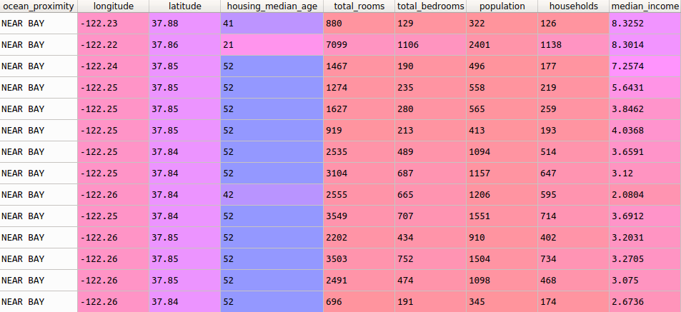
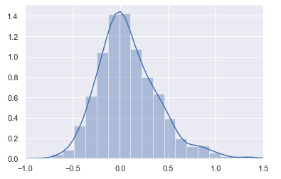

This project was my first attempt at building a neural network model without the help of a tutorial or a book. The goal of this model was to predict the price of housing in an area based off of qualities such as
ocean proximity, rooms in the house, and 7 other features. All of the features happened to be relevant in this dataset, so I didn't have to exclude any.

However, the "total_bedrooms" feature had quite a few holes in it, which I noticed after some errors were thrown. This was the largest issue I had with the project. For a couple days I couldn't figure it out,
until I realized that there were entries missing in the data. I was finally able to fix this thanks to the handy pandas.dataframe's .median() and .fillna() methods,
which I used to arbitrarily find and fill empty spaces in the "total_bedrooms" column with the median value of the whole column, which was 435 (per neighborhood).
#getting rid of holes in data
median = dataset["total_bedrooms"].median()
dataset["total_bedrooms"].fillna(median, inplace = True)
Now that this issue had been solved, it was time to fit the categorical "OCEAN_PROXIMITY" column to a numerical value using OneHot encoding. Just like in the previous project, the encoder created 4 new features for each
of the proximity values, and set the corresponding binary values. After that, I began to build the model. This model differed from my first project in that it was a mean squared error problem rather than a crossentropy
problem, so I used an rmsprop optimizer and a mean squared error loss function. I came to these decisions based on what I had read in my research sessions. I also used 3 hidden layers, just to see if it would become
more accurate.
classifier = Sequential() #initialize
#first hidden layer
classifier.add(Dense(output_dim = 6, init = 'uniform', activation = 'relu', input_dim = 13))
#relu is the rectifier function
#second hidden layer
classifier.add(Dense(output_dim = 6, init = 'uniform', activation = 'relu'))
#third hidden layer
classifier.add(Dense(output_dim = 6, init = 'uniform', activation = 'relu'))
#add output layer
classifier.add(Dense(output_dim = 1, init = 'normal', activation = 'elu'))
#Compile it
classifier.compile(optimizer = 'rmsprop', loss = 'mean_squared_error', metrics = ['accuracy'])
#fit ANN to the training set
classifier.fit(X_train, y_train, batch_size = 10, epochs = 60)
Unfortunately, the accuracy metric didn't seem to display a proper number for these, so it was hard for me at first to judge if I was doing it correctly. I realized after a bit that the accuracy metric is probably
binary, and counted either correct or incorrect values only. That metric was good for the Banking set, where the outcome I was predicting was binary. This dataset had a continuous range of outputs, so the output was
almost certainly going to be wrong as it seems impossible to guess 6 correct digits to the 1's place. Once the model had compiled, I calculated the median variances and graphed them using the seaborn library, and
used the pandas.DataFrame.describe function to find that the mean variance was 0.096, which translates to an average 91% accuracy!
#getting variacne stats
variance_total_matrix = np.subtract(y_pred, y_test)
#variance table
variance_total_list = np.diagonal(variance_total_matrix)
variance_percent_list = np.divide(variance_total_list, y_test)
...
var_df = pd.DataFrame(variance_percent_list)
seaborn.set()
seaborn.distplot(var_df).set(xlim=(-1, 1.5))
var_df.describe()
...
mean 0.095881
...
